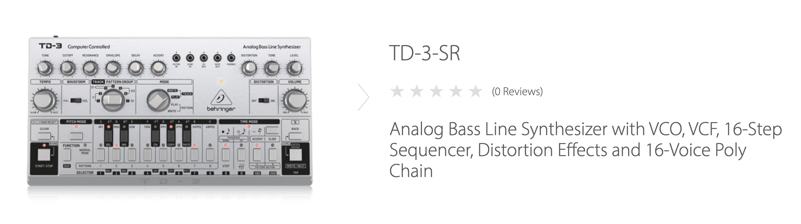

実を言うとむしろ今まで作ってなかったの？って感じです。そう思えるくらい、Behringerといえば「往年のシンセやエフェクターなんかのクローンを安価で売る」っていうイメージでしたので（失礼）。
とはいえ、TB-303って言ったらもうレジェンドと言ってもいいくらい、ダンスミュージックには欠かせない機材（というか音）なので、「BehringerがTB-303のクローンを売るらしい」って言う話を聞いたらどうしても期待しちゃうわけです。
behringer/TD-3が発表されました。
— BEHRINGER JP (@BEHRINGERJP) November 8, 2019
オリジナル回路を再現しつつ、ディストーションやポリチェインなどの機能も搭載しました。https://t.co/45hMi7Fmz2
筐体色は3色！？
※その後、黒と黄色の筐体色も追加されました。（2020年1月1日追記）
ディストーション回路搭載！？
アナログ回路！？
・・・とまぁ、結構いろんな要素をぶっ込んできたな、という感想です。というか、TD-3自体がTB-303のクローンなのに、これに搭載するディストーション回路はBOSSのDS-1を参考にしましたって商品のオフィシャルページでサラッと書いてます。
これを見るにつけ、とくにRoland方位に向けて絨毯爆撃しつつケンカ売ってるとしか思えないんですよね。TR-808クローンのRD-8の件もそうですが、Behringer、キレッキレです。
149ユーロ！!
日本で代理店を経由して販売するなら、だいたい2万円前後といったところになるでしょうか。なお、Behringerの代理店のオフィシャルには、現時点でTD-3の情報はとくにありません。
個人的には中身をアナログ回路にしてきた、っていうのはかなり気になっています。というのは、本家本元のRolandはBoutiqueシリーズのTB-03でTB-303を復刻したわけですが、これってデジタルなんですよね。ACBっていう、「アナログ回路をシミュレートする」Rolandの技術が使われています。デジタルだからだめだ、という話ではありません。「本家がデジタルで再現したものを、Behringerはアナログでクローンしつつ低価格で売る」っていうのが、消費者としては嬉しい反面、商売人として考えると「Behringer、エゲツねぇな」と思ってしまうわけです。
「アナログ回路をシミュレートするなら、実際にアナログ回路を作ったほうが安い。シミュレートの精度をあげようとするとその分処理系にコストがかかる」という、真偽の程がわからない話もあります。本当のところはどうなのでしょうか。誰か教えてミペータス！（唐突なユリアーモ要素）
YouTubeにはすでにクローン元と比べる動画があります。
TB-303だけでなく、RE-303やx0xb0xなどの有名どころなクローンとも比較しています。
アップロードされた動画を見るに「TD-3はよく似てるけど、往年のクローン機に比べるとやっぱりどこか違う」という感想を持たざるを得ません。これはTD-3がダメなのではなく、クローンがどれも総合点高すぎという「どんぐりの背比べの逆」を地で行っているためです。
本家のTB-303なんかと比較すると、若干TD-3はハイに特徴がある感じを受けます。そう考えるとRE-303の再現率たるや、もはや本物ではなかろうかという驚異の再現率です。x0xb0xも安心安全な再現率です。ただし、前述の通り「基本的にはどいつもこいつもレベル高すぎ」なのでTD-3の持つ「ちょっとした差異」が如実に感じられるだけです。
TD-3には、RE-303などのクローンが搭載しなかったディストーション回路を持っています。値段も他のクローンと比較すると、とんでもなく安いです。バーゲンセールかってくらいすでに安い。実際安い。同じく歪み系（オーバードライブ）とディレイを搭載したTB-03の値段を考えると、空間系エフェクターはないものの「エフェクター込みのTB-303クローン」として考えれば恐ろしいコストパフォーマンスです。もはや、「TB-303に忠実な完璧クローンじゃなきゃダメだ！」という再現率至上主義者でもない限り、十二分に魅力的なプロダクトとして映るでしょう。実際私もグラグラ来てます。
とりあえず、日本の代理店による発表を待とうと思います。
年の瀬も迫った2019年12月31日、突如新たな筐体色が追加されました。黒と黄色です。
黒もなかなかシックでカッコいいですが、なにより黄色ですね。ベリンガーマークがスマイルマークに変わっているところなんて、ホントにわかってますよねぇ、使われ方が。